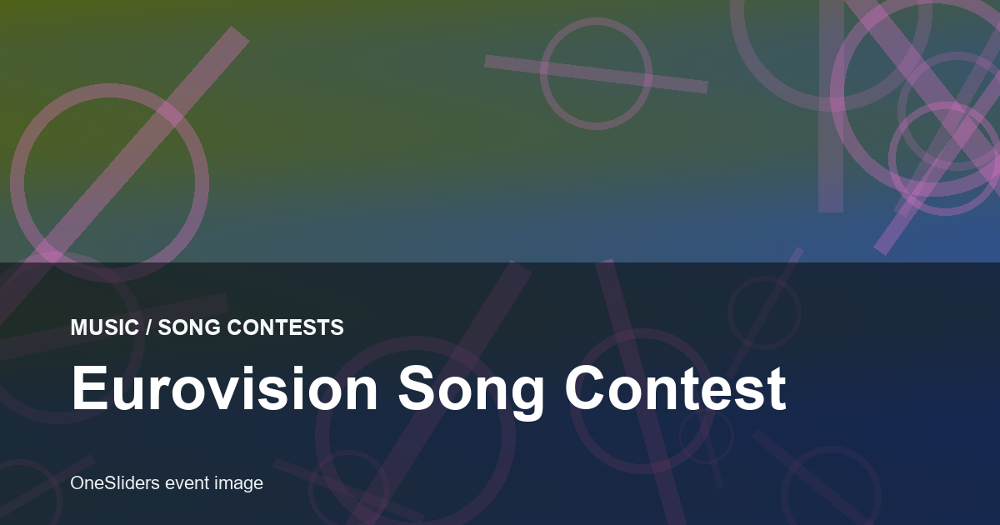
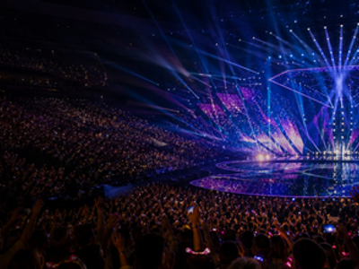

Song contest event guide
Eurovision Song Contest
The annual live music contest where broadcasters send one song, viewers argue about the voting, and one country leaves with the microphone trophy.

More song contestsInterested in more song contests?Explore related events, locations and calendar moments.
Eurovision began in 1956 as a live television contest and grew into a shared European pop ritual with national juries, public voting and a large fan culture.
Most entries fight through two semi-finals. The host and Big Five enter the Grand Final directly, then jury and public votes decide the winner.
Edition guide
Eurovision Song Contest 2026
Choose an edition; only this slide changes.
Bulgaria is expected to host after DARA won the 2026 contest; exact city and dates are still pending.
Exact show dates are not yet announced; mid-May is the normal Eurovision window.
Host country:  Bulgaria. City selection is still pending.
Bulgaria. City selection is still pending.
Use official Eurovision and host broadcaster channels once the host city and venue are confirmed.
Participating broadcaster list and artists are announced in the season before the contest.
Eurovision.tv winner story, Eurovisionworld results and OneSliders local Eurovision show pages.